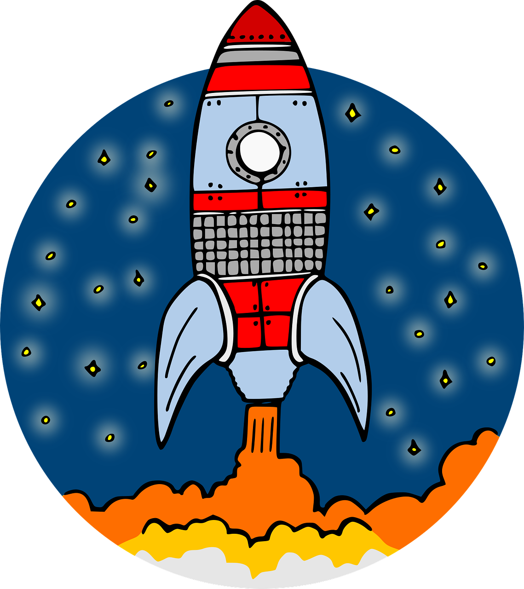

Cite: Ariana, P. (2024, October 16). It takes a village…. Oxford iHealth. https://doi.org/10.59350/x8apg-7kb31
After the pilot run of the Open and Reproducible Science in R module for IHTM Class 2021-2022, it was apparent based on student feedback that learning to code in R was something most of our students valued. As with other elements of the course, it is clear that more impactful learning happens when students use whatever they have learned on an actual analytic task. With this in mind, we made some changes to the module starting from IHTM Class 2022-2023.
The sessions were integrated into the core PTGH module. This reflected our belief that the data skills alongside the exposure to the concepts of open science and reproducible research should be part of the knowledge base and toolkit of a modern day global health practitioner.
We increased the allocated sessions from 5 to 10 to include cross-cutting and foundational topics on open science and reproducible research in addition to a wider breadth of basic R topics.
These changes allowed for more practical data analysis exercises for the students including a hackathon based on a global health topic and a corresponding real dataset to work on as a team. More importantly, these changes shifted the focus of our learning objectives from just teaching students how to code in R to enabling the practice of open and reproducible science using R and providing the tooling, skills, and mindset to participate in a community of learners and practitioners even beyond the course.
From IHTM CodeHub to iHealth Champions

From this was born IHTM CodeHub, a community for IHTM students and alumni with the aim of providing a forum for continuous learning in R and support for the practice of open and reproducible science. Every member of the outgoing class since 2022 have been inducted to IHTM CodeHub during the course graduation event.
Since then, IHTM CodeHub has supported specific challenges faced by some of our members from implementing reproducible data collection and analysis systems for nutrition programme coverage in Liberia to capacity-building on use of R for reproducible workflows on health vital statistics in Seychelles. Over the coming weeks, we will be showcasing these IHTM CodeHub community projects to illustrate how this community can support such efforts.
This year, based on feedback from current community members, we are rebranding our community to iHealth Champions. The main driver of this rebrand is to make the name more aptly represent what the community aims for which is to champion and support its members in their journey towards the practice of open and reproducible science and in turn for our members to become champions and advocates of open and reproducible science in their own contexts. In addition, the new name de-emphasises “code” which some members felt intimidating as it seemed participation in the community meant being able to code well. Instead, we are highlighting a community of practice for open and reproducible science.
Since this is the tenth year of the MSc in International Health and Tropical Medicine, we thought it important that the entire IHTM alumni cohort be given the opportunity to be an iHealth Champion.
As such, and as a way to formally introduce IHTM alumni cohorts to the iHealth Champions community and discuss how to formally join, we will be holding our first ever virtual Community Day on the 16th of November at 1pm GMT. We will be sending out the formal invite to the IHTM alumni email mailing list with the details of the Community Day and the Zoom link for the event.
We look forward to seeing all of you then! And welcome to the iHealth Champions community!